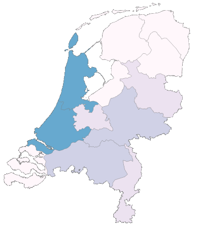
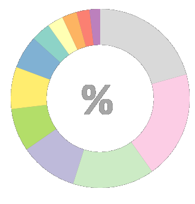
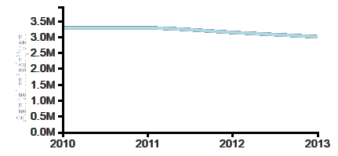
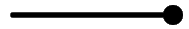
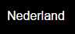
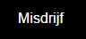

This webpage gives information about crime in the Netherlands. With this page you can explore the quantity and relative occurance of certain crimes, either for the entier Netherlands or for each province individually.
The datamap provides information about the accurance of a crime per province in percentage. When you hover your mouse over a province the piechart will show the percentage of the total amount of a selected crime occured in that province. When you click on the province more specific data about crimes in that province will show in the piechart
The piechart provides more specific information about the distribution of a crime per province corrected for the amount of inhabitans of each province. When you click on either a province on the map or a province in the piechart, the piechart will provide more information about the percentage of a specific crime compared with the total amount of crimes in that specific province.
The lineplot provides information about the occurance of a specific crime over the years 2010 to 2013. When you select a specific province and/or crime the data in the plot will show you the specific information of that province and or crime
The slider can be used to select a year.
The Nederland button can be used to restore all settings to default. This means you get the data total crime in the Netherlands.
The Misdrijf button can be used to select a specific crime.
Sources: Crime data of each province over the years 2010-2013: https://opendatanederland.org. Population data of each province: http://www.metatopos.eu/provincies.html